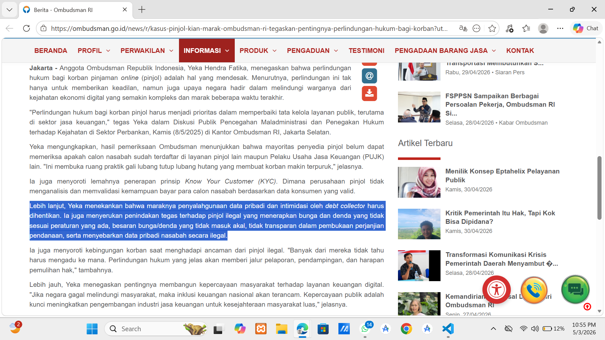

Analisis Studi Kasus Model Bisnis Di Internet
Kasus Pinjol Kian Marak, Ombudsman RI Tegaskan Pentingnya Perlindungan Hukum bagi Korban


Penjelasan & Opini
Kasus pinjaman online (pinjol) ilegal yang dijelaskan oleh Ombudsman ini sangat memprihatinkan karena menunjukkan masih banyak praktik bisnis yang tidak beretika. Dari berita tersebut, terlihat bahwa banyak pinjol yang memberikan bunga dan denda tidak masuk akal, bahkan sampai menyalahgunakan data pribadi dan melakukan intimidasi kepada korbannya. Hal ini membuat peminjam terjebak dalam kondisi "gali lubang tutup lubang" yang justru memperburuk masalah keuangan mereka. Link berita : https://ombudsman.go.id/news/r/kasus-pinjol-kian-marak-ombudsman-ri-tegaskan-pentingnya-perlindungan-hukum-bagi-korban?utm_source=chatgpt.com
Opini Saya:
Menurut saya, apa yang dilakukan oleh pinjol ilegal ini sudah sangat keterlaluan karena berani menggunakan data pribadi sebagai alat untuk mengancam. Ini bukan lagi sekadar masalah ekonomi atau utang piutang, tapi sudah melanggar hak asasi dan sisi kemanusiaan.
Saya juga merasa masalah ini tidak sepenuhnya salah masyarakat yang meminjam, karena seringkali mereka dalam keadaan terdesak dan kurang edukasi soal mana layanan yang aman.
Jadi, selain tindakan tegas dari hukum, kita semua perlu lebih peduli untuk saling mengingatkan agar tidak ada lagi yang terjebak dalam praktik yang merugikan ini.